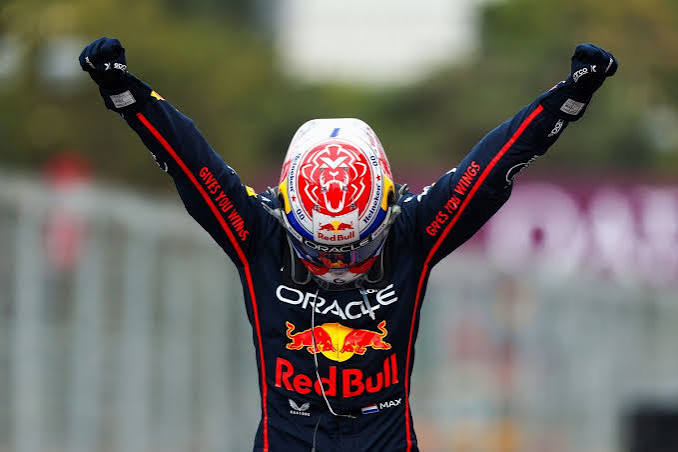
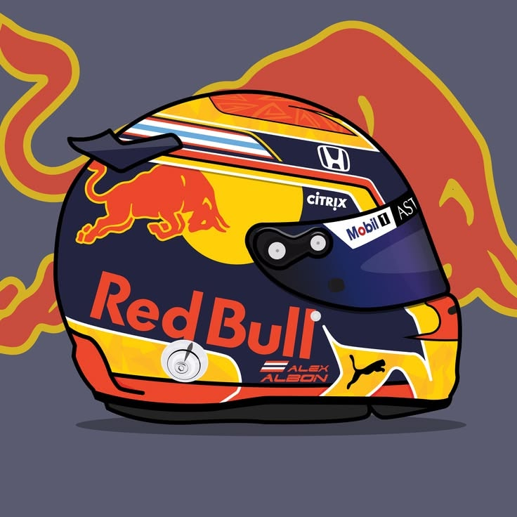
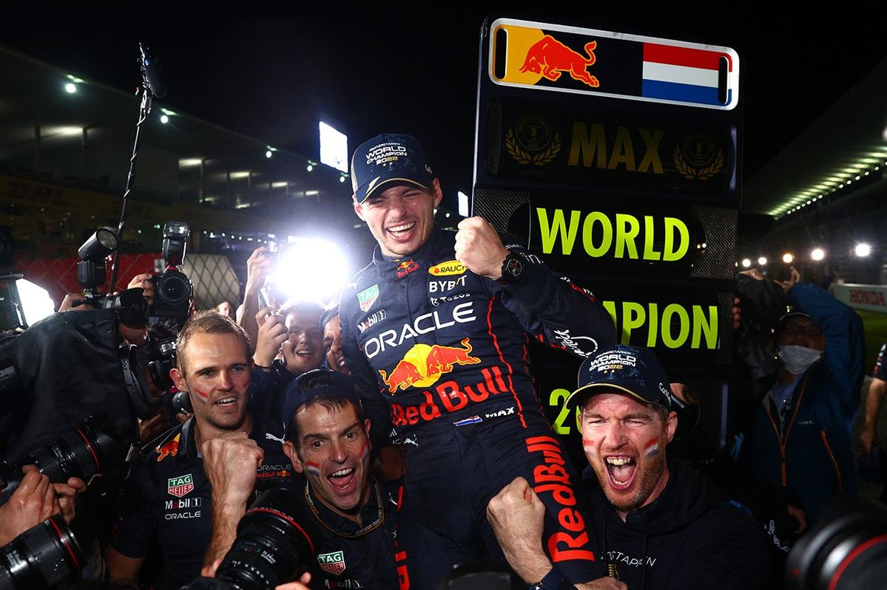
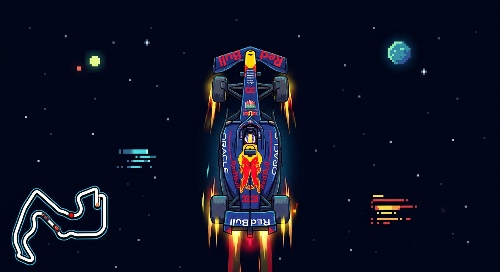

2015 — Debut
Debut en Fórmula 1 con Toro Rosso en Melbourne con solo 17 años, convirtiéndose en el piloto más joven en disputar un Gran Premio.
simply lovely
Explorá la trayectoria completa de Max Verstappen: biografía, estadísticas actualizadas, todos los circuitos con sus victorias, gráficos por temporada, momentos clave y más. Datos actualizados a septiembre de 2026.

Max Emilian Verstappen nació el 30 de septiembre de 1997 en Hasselt, Bélgica, y compite bajo bandera neerlandesa. Es hijo del expiloto de Fórmula 1 Jos Verstappen y de la exkartista belga Sophie Kumpen, lo que lo vinculó al automovilismo desde muy pequeño.
Tras una trayectoria brillante en karting (campeonatos europeos y mundiales), dio el salto a monoplazas y rápidamente llamó la atención por su velocidad natural, agresividad controlada y madurez en pista. En 2015 debutó en Fórmula 1 con Toro Rosso con apenas 17 años, convirtiéndose en el piloto más joven en disputar un Gran Premio.
Su ascenso fue meteórico: en 2016 fue promovido a Red Bull Racing y ganó en su primera carrera con el equipo (España), siendo el ganador más joven de la historia de la F1. Desde entonces se consolidó como una de las grandes figuras de la era moderna, logrando cuatro campeonatos mundiales consecutivos (2021–2024) y batiendo múltiples récords de victorias, podios y dominio en una temporada.
Conocido por el apodo “Mad Max” en sus inicios y por su estilo de conducción al límite, Verstappen combina talento puro, lectura estratégica de carrera y una capacidad excepcional para rendir bajo presión. En 2026 continúa compitiendo con Red Bull Racing (n.º 3), manteniéndose como protagonista en la lucha por las victorias.
Datos actualizados a septiembre de 2026
* Temporada 2026 en curso. Las barras doradas corresponden a los años de campeonato (2021, 2022, 2023, 2024).
Debut en Fórmula 1 con Toro Rosso en Melbourne con solo 17 años, convirtiéndose en el piloto más joven en disputar un Gran Premio.

Ascenso a Red Bull, primera victoria en España 2016 y años de crecimiento, aprendizaje y lucha constante para consolidarse entre los mejores.

Temporada histórica frente a Lewis Hamilton. Tras una batalla intensa hasta la última vuelta en Abu Dabi, logra su primer título mundial.

Cuatro títulos consecutivos (2021-2024) con años de dominio récord, victorias aplastantes y una de las etapas más exitosas de la F1 moderna.

Temporada de gran remontada y pelea hasta el final, mostrando competitividad y carácter en una campaña muy disputada.

Por ahora se mantiene en la lucha y pelea el subcampeonato, con actuaciones destacadas en el inicio de la nueva era reglamentaria.
La temporada 2021 fue una de las más intensas de la historia de la Fórmula 1. Max Verstappen y Lewis Hamilton protagonizaron un duelo rueda a rueda durante 22 Grandes Premios, con constantes cambios en el liderato y momentos que marcaron el campeonato.
Desde el inicio de la temporada, Red Bull y Mercedes llevaron la batalla al límite en pista y en estrategia. Los roces, incidentes y definiciones polémicas alimentaron una rivalidad que se resolvió recién en la última vuelta del último Gran Premio.
Verstappen llegó a Abu Dabi empatado en puntos con Hamilton y, tras un final controvertido, logró su primer campeonato mundial, iniciando una nueva era en la Fórmula 1.
La colisión en la curva Copse durante la primera vuelta, donde el coche de Hamilton impactó a Verstappen a más de 300 km/h, enviándolo contra los muros y marcando el inicio de una rivalidad agresiva.
Otro accidente entre ambos pilotos en la primera chicana tras las paradas en boxes, donde Verstappen saltó por encima del monoplaza de Hamilton, dejando a ambos fuera de carrera y aumentando la tensión.
Una carrera caótica con múltiples banderas rojas donde Hamilton ganó para empatar el campeonato a 369.5 puntos, tras un incidente en la segunda salida donde Verstappen forzó a Hamilton fuera de la pista.
La decisión controversial de la FIA de permitir que solo los coches retrasados adelantaran a los líderes durante el coche de seguridad final, lo que permitió a Verstappen (con neumáticos nuevos) adelantar a Hamilton en la última vuelta para ganar su primer título mundial.

El desenlace: en Yas Marina, el título se definió en la última vuelta. Verstappen aprovechó el reinicio, adelantó a Hamilton y cruzó la meta como campeón del mundo por primera vez, cerrando una de las rivalidades más recordadas de la Fórmula 1.
Todos los circuitos donde Max Verstappen ha ganado en Fórmula 1, con su número de victorias. Hacé clic en cada circuito para ver un mapa con la ubicación de la pista. (Total: 74 victorias en 27 circuitos)


Más allá de los números, Verstappen destaca por su capacidad para gestionar neumáticos, adaptarse a condiciones cambiantes y ejecutar adelantamientos decisivos. Su relación con los ingenieros y su enfoque metódico en cada fin de semana han sido claves en la era exitosa de Red Bull.
Compañeros con los que compartió equipo en Red Bull Racing en Fórmula 1.
Compañero de Max entre 2021 y 2024. Fue una pieza importante en los campeonatos de constructores de Red Bull, sumando victorias, podios y desempeños estratégicos clave, especialmente en defensas y gestión de carrera que apoyaron las luchas por el título.
Compartió garaje con Verstappen desde 2016 hasta 2018. Fue una etapa de alta competitividad interna y grandes batallas en pista, mientras Red Bull se consolidaba como aspirante constante a victorias.
Compañero durante parte de 2019 y toda la temporada 2020. Aportó puntos importantes para el equipo en un período de transición y desarrollo del monoplaza.
Fue compañero de Max en la primera mitad de 2019. Tras ese período, Red Bull realizó cambios en su alineación durante la temporada.

Se encienden 5 luces rojas. Cuando se apaguen todas, tocá el botón lo más rápido que puedas. Si lo tocás antes, es salida en falso.
Mejor tiempo: --
Encontrá las 8 parejas en la menor cantidad de movimientos y tiempo. Tocá las cartas para darlas vuelta.
Movimientos: 0 · Tiempo: 0s
Mejor: --
Respondé las preguntas y sumá puntos. Las opciones se mezclan en cada partida.
Compará dos temporadas de Max y elegí cuál tuvo más victorias. Sumá la mayor racha de aciertos posible.
Hacé clic o tocá el trofeo antes de que se mueva. Tenés 20 segundos para conseguir la mayor cantidad de puntos.
Tiempo: 20s · Puntos: 0 · Mejor: --